Обзор
В этом уроке мы покажем вам процесс настройки физического взаимодействия между свисающими листьями на активе ивы и любым другим физическим объектом на уровне (например, игроком). Для этого мы будем использовать нашу систему деформации объединенной сетки и покажем вам, как ее настроить в CRYENGINE.
Merged Mesh Deform Cloth — это улучшенная и оптимизированная система для объекта ткани. С помощью этой системы можно настроить активы с поведением ткани в виде кистей static и объектов растительности. В отличие от активов объектов одежды, объединенная сетка Deform Cloth может одновременно хранить в себе твердую геометрию и деформируемую геометрию ткани.
Этот метод отлично подходит для подвешивания растительности, такой как болотный мох или листья ивы.

Рис1: Объединенная деформация сетки в действии (с активированным ветром)
Учебные файлы
Исходная сцена 3dsMax с экспортированными файлами CRYENGINE:
Предварительные требования для этого урока
Прежде чем продолжить изучение этого руководства, обязательно прочтите и усвойте следующие темы;
- Как установить CryMaxTools
- Основной рабочий процесс CRYENGINE 3dsMax
- CRYENGINE Экспортер
- Масштаб единиц измерения 3dsMax соответствует системе единиц измерения CRYENGINE
Полезная информация
При работе над активом обязательно помните о следующих вещах:
- Ваши узлы ткани должны быть связаны с сеткой, выступающей в качестве основного объекта. Манекены и помощники не работают в качестве основного объекта.
- Узлы ткани должны следовать соглашению об именах: гибкий, гибкий00, гибкий01, и т. д.
- Канал цвета вершин используется для изменения жесткости ткани и для фиксации вершин на определенном месте.
- Держите каркас ткани неровным, а не плоским, чтобы избежать быстрой усадки.
- Пользовательские свойства необходимо настроить, чтобы движок распознавал сетку как ткань.
- SPU будет вычислять узлы одновременно в нескольких потоках. Для обеспечения дружелюбия с SPU можно использовать до десяти узлов на каждый объект.
- Не используйте слишком много разных идентификаторов материалов для узлов ткани вашего объекта. Узлы ткани объединяются в один большой объект в движке, тогда как каждый материал ID получает свой собственный объединенный объект. Поэтому старайтесь иметь в двигателе как можно меньше тканевых объектов.
- Должна быть определена хотя бы одна черная вершина, чтобы ткань не упала.
Первоначальная настройка 3dsMax
В этом уроке мы будем создавать наш ресурс в следующем каталоге.
<YOUR_PROJECT_FOLDER>\Assets\Objects\tutorial\vegetation\06\tree\merged_mesh_deform\
Итак, сохраните сцену 3dsMax в этом месте. Все наши экспортированные активы будут сохранены там. Некоторые текстуры, которые мы будем использовать, взяты из уже существующих ресурсов, и мы укажем вам каталог позже в этом уроке.
Мы продолжим исходить из предположения, что вы уже создали ресурс, поскольку это не учебник по моделированию 3dsMax. Мы начнем с подготовки ресурса для CRYENGINE, назначения SubIds соответствующим полигонам и настройки материала.
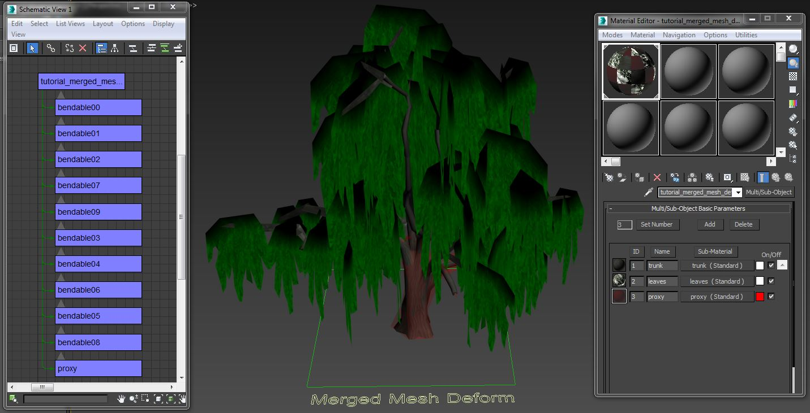
Рис2: 3dsMax обзор готовой модели.
Материал
Сначала мы настроим материал для объекта. В 3dsMax откройте Material Editor и создайте новый мультиматериал под названием tutorial_merged_mesh_deform с тремя подматериалами. Назовите первый SubId как багажник, второй как листья и третий как прокси. См. Рис2 и обратите внимание на многоматериальный настройка в 3dsMax Material Editor.
Настройка идентификатора транка
Откройте подматериал багажника (SubId1). Загрузите диффузную карту и карту нормалей для путей материалов. Карта нормалей также должна содержать альфа-карту для значения сглаживания PBS.
Файл примера относится к следующим обучающим текстурам:
<YOUR_PROJECT_FOLDER>\Assets\Objects\tutorial\vegetation\06\tree\merged_mesh_deform\tutorial_merged_mesh_deform_trunk_diff.tif><YOUR_PROJECT_FOLDER>\Assets\Objects\tutorial\vegetation\06\tree\merged_mesh_deform\tutorial_merged_mesh_deform_trunk_ddna.tif>
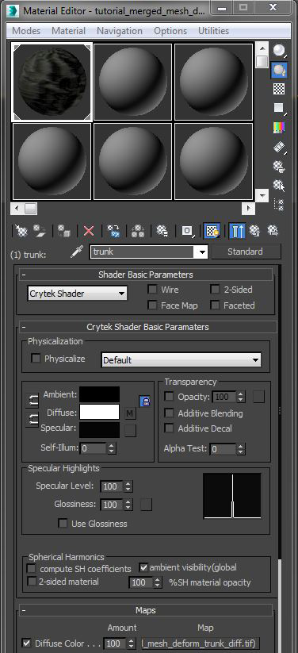
Рис.3: Настройка параметров шейдера Trunk SubId1.
В Основные параметры шейдера окно:
- Выберите Крайтек Шейдер.
- В Физическая реализация раздел, не проверяйте Физически установите флажок и в следующем раскрывающемся меню выберите По умолчанию.
Настройка идентификатора листьев
Откройте подматериал «Листья» (SubId2). Загрузите диффузную карту и карту нормалей для путей материалов. Диффузная карта должна содержать альфа-карту непрозрачности. Карта нормалей также должна содержать альфа-карту для значения сглаживания PBS.
Файл примера относится к следующим обучающим текстурам:
- <YOUR_PROJECT_FOLDER>\Активы\Объекты\tutorial\vegetation\06\tree\merged_mesh_deform\tutorial_merged_mesh_deform_leaves_diff.tif>
- <YOUR_PROJECT_FOLDER>\Активы\Объекты\tutorial\vegetation\06\tree\merged_mesh_deform\tutorial_merged_mesh_deform_leaves_ddna.tif>
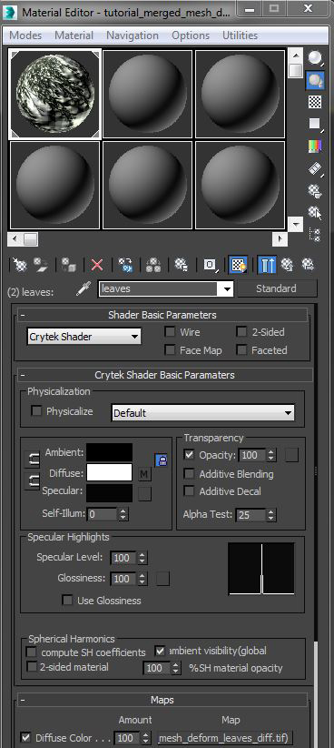
Рис.4: Остается настройка параметров шейдера SubId2.
В Основные параметры шейдера окно:
- Выберите Крайтек Шейдер.
- В Физическая реализация раздел, не проверяйте Физически флажок.
- В следующем раскрывающемся меню выберите пункт По умолчанию вариант.
- Установить Альфа-тест до 25.
Настройка идентификатора прокси
Откройте прокси-подматериал (SubId3). Этот материал будет использоваться для прокси-тома и определяет свойства этого объекта. Физический прокси (NoDraw) и параметр Physicalize позволяют объекту иметь невидимую сетку столкновений.
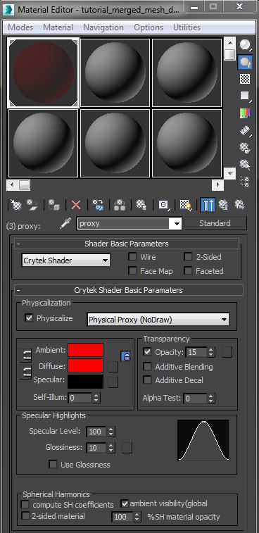
Рис5: Настройка параметров шейдера прокси SubId3.
В Основные параметры шейдера окно:
- Выберите Крайтек Шейдер.
- В Физическая реализация раздел, проверьте Физически флажок.
- В следующем раскрывающемся меню выберите пункт Физический прокси (NoDraw) вариант.
В Основные параметры шейдера Crytek раздел, установите диффузный цвет на красный и уменьшите непрозрачность до 15–30%. Хоть это и не является обязательным, но помогает пользователю быстро идентифицировать прокси-геометрию внутри актива.
Экспортируйте материал
Теперь мы настроили материал для объекта с тремя SubIds: видимыми материалами (листья и ствол) и материализованным материалом столкновений (прокси).
- Убедитесь, что в редакторе материалов выбран правильный материал.
- В CRYENGINE Экспортер, нажмите кнопку Создать материал кнопка. Сохраните это в том же каталоге, что и объект:
<Your_Project>\Assets\Objects\tutorial\vegetation\06\tree\merged_mesh_deform\tutorial_merged_mesh_deform.mtl>
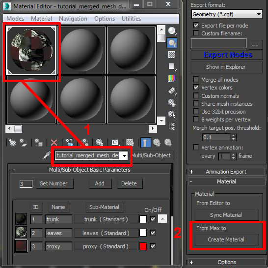
Рис6: Выбор правильного материала для экспорта текстуры.
Геометрия
Нашей геометрией для этого урока будет ива. Благодаря свисающим листьям этот тип дерева идеально подходит для демонстрации физики ткани на объекте static. Чтобы эта функция работала, деформируемые фрагменты листьев должны быть отдельными объектами, связанными с основным геометрическим объектом static, выступающим в качестве корня.
Для начала нам нужно настроить магистраль в качестве корневого объекта для настройки нашей иерархии. Априменить материал (tutorial_merged_mesh_deform.mtl) который мы только что создали к этому и убедитесь, что для его SubId установлено значение 1. Используйте Развернуть модификатор UVW чтобы развернуть свою оболочку UV. Назовите объект tutorial_merged_mesh_deform. Создайте прокси для ствола, примените к нему тот же материал, установите для его SubId значение 3 (прокси) и назовите его. прокси.
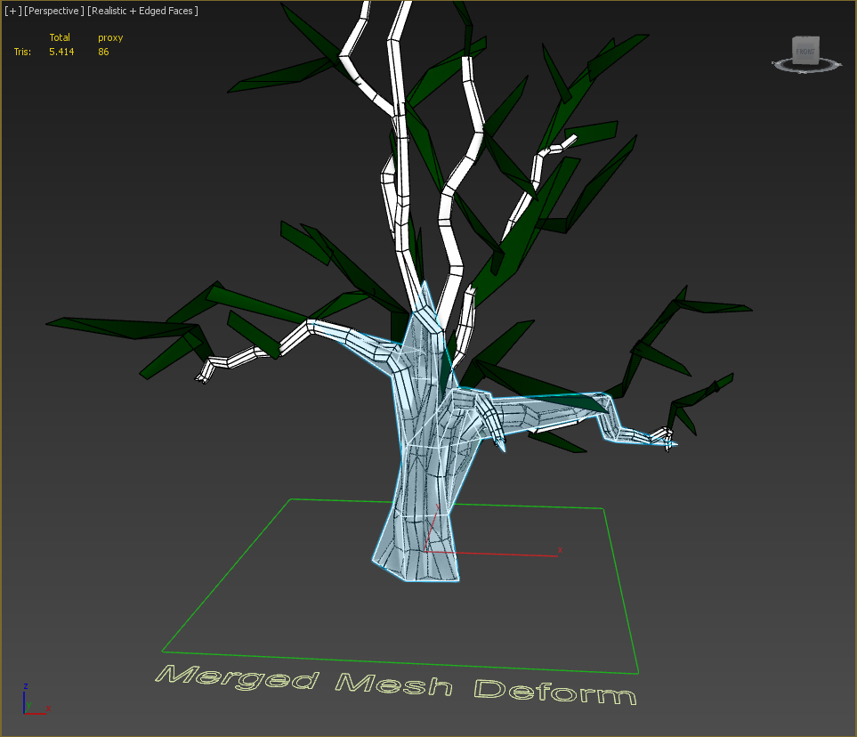
Рис6: Геометрия ствола и его прокси.
Настраиваем плоскость для листьев и применить недавно созданный материал. Сповесьте материал SubId на 2 (листья). Наконец-то тыувидеть Развернуть модификатор UVW чтобы настроить оболочку UV так, чтобы она помещалась только вокруг одного из участков листа на текстуре. Для некоторых вариаций скопируйте геометрию листа еще два раза и настройте каждую оболочку UV на другой участок листа.
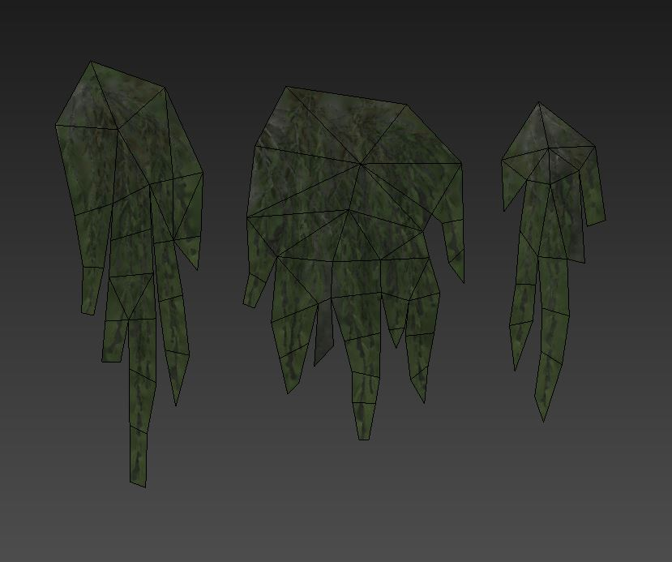
Рис.7: Геометрия всех трех участков листьев деревьев.
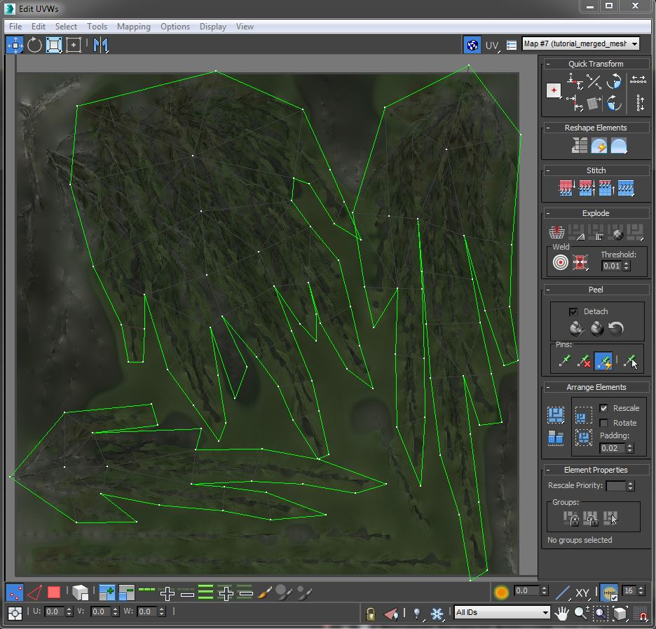
Рис 8: UV Расположение листьев в 3dsMax. Обратите внимание на UV-развертку листа, соответствующую базовой текстуре.
Применение цвета вершин
Прежде чем мы продолжим создавать остальную часть дерева, дублируя листья, мы нарисуем цвет вершин на наших ресурсах. Это следует сделать сейчас, чтобы избежать повторения одного и того же процесса снова и снова для каждого дубликата. Вы также можете покрасить их в конце, когда геометрия кроны дерева будет завершена. Не имеет значения, в каком порядке вы это делаете, мы делаем это сейчас, потому что на экране меньше объектов. Зеленый цвет позволяет вершинам свободно перемещаться при ударе, тогда как черный цвет фиксирует вершины на их местоположении. Оттенки зеленого определяют интенсивность их жесткости. Закрасьте все три листа зеленым цветом, а вершины их верхнего ряда закрасьте черным, чтобы зафиксировать их в воздухе.
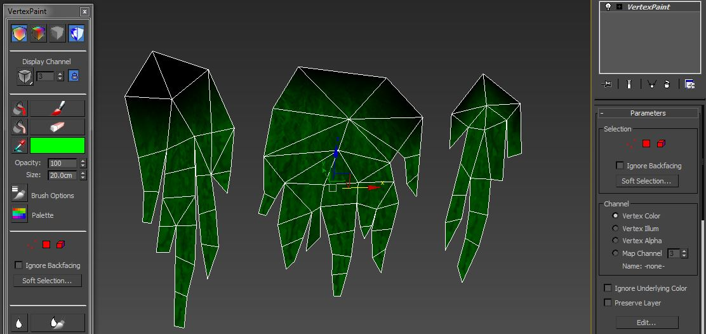
Рис.9: Добавление цвета вершин к геометрии с помощью модификатора рисования вершин.
Примечание: Вместо зеленого можно также использовать белый. Мы используем зеленый цвет, чтобы синий и красный каналы были свободны для других целей.
Соглашение об именах
Имя вашего корневого объекта будет определять имя вашего актива. Поэтому название tutorial_merged_mesh_deform.
Сгибаемые объекты должны соответствовать следующему соглашению об именах: сгибаемый00, сгибаемый01, сгибаемый02, и т. д.
Доступные пользовательские свойства
Чтобы активировать систему Cloth Merged Mesh Deform для движка, зайдите в UDP для каждого листа и введите «mergedmesh_deform».
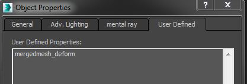
Рис. 10: Диалоговое окно UDP с mergedmesh_deform для включения системы.
Есть несколько других доступных параметров, которые определяют поведение всей геометрии определенным образом.:
UDP | Описание |
|---|---|
mergedmesh_deform | Необходимо, чтобы включить физику деформации ткани объединенной сетки для этого узла. |
mergedmesh_deform_stiffness | Определяет жесткость деформируемого объекта в диапазоне от 0,0 до 1,0. |
mergedmesh_deform_damping | Управляет скоростью стабилизации деформируемого объекта в диапазоне от 0,0 до бесконечности. |
mergedmesh_deform_variance | Управляет степенью случайности в алгоритме выборки данных о ветре (от 0,0 до бесконечности). |
mergedmesh_deform_air_resistance | Масштабирует влияние ветра, умноженное на уровень силы ветра. |
mergedmesh_deform_air_frequency | Косинусы модулируют скорость ветра на вершину в диапазоне от 0,0 до бесконечности. |
mergedmesh_deform_air_modulation | Косинус модулирует скорость ветра на силу ветра в диапазоне от 0,0 до бесконечности. |
mergedmesh_deform_max_iter | Количество итераций моделирования от 1 до 12, по умолчанию — 3, чем выше, тем дороже. |
Введите следующие значения, чтобы получить правильное поведение ваших листьев.
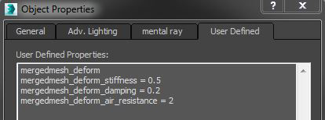
Рис11: Диалоговое окно UDP с несколькими значениями.
Дублируем листья.
На следующем этапе листья нужно разбросать по веткам стволов деревьев. После этого вы должны начать объединять некоторые участки ткани вместе, пока не останется десять или меньше листьев. Это позволит избежать значительного снижения производительности SPU. Обязательно соблюдайте правильное соглашение об именах.

Рис 12: Объединенные участки листьев вместе со стволом.
Настройка иерархии
Теперь пришло время связать все объекты с багажником. Выбрать тот прокси и гибкий00, гибкий01, гибкий02 и т. д. и связать их с tutorial_merged_mesh_deform.
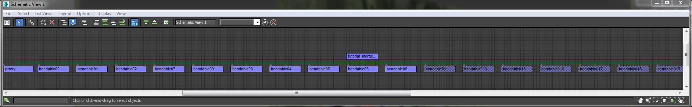
Рис. 13: Иерархия показана в схематическом виде.
Экспортируйте геометрию
Теперь мы готовы экспортировать нашу геометрию в движок. В экспортере CRYENGINE:
- Добавьте корневой узел актива в список экспорта (в данном случае он называется tutorial_merged_mesh_deform)
- Выбрать Геометрия (*.cgf) из Формат экспорта выпадающий список.
- Нажмите кнопку Экспорт узлов кнопка.
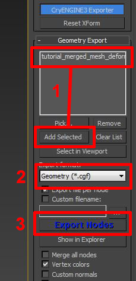
Рис14: Добавление актива в экспортер
Продолжить CRYENGINE
Мы завершили настройку 3dsMax части руководства. Чтобы продолжить, перейдите на следующую страницу, где мы настраиваем материал и используем редактор растительности, чтобы разместить некоторые из этих ресурсов Touch Bending.